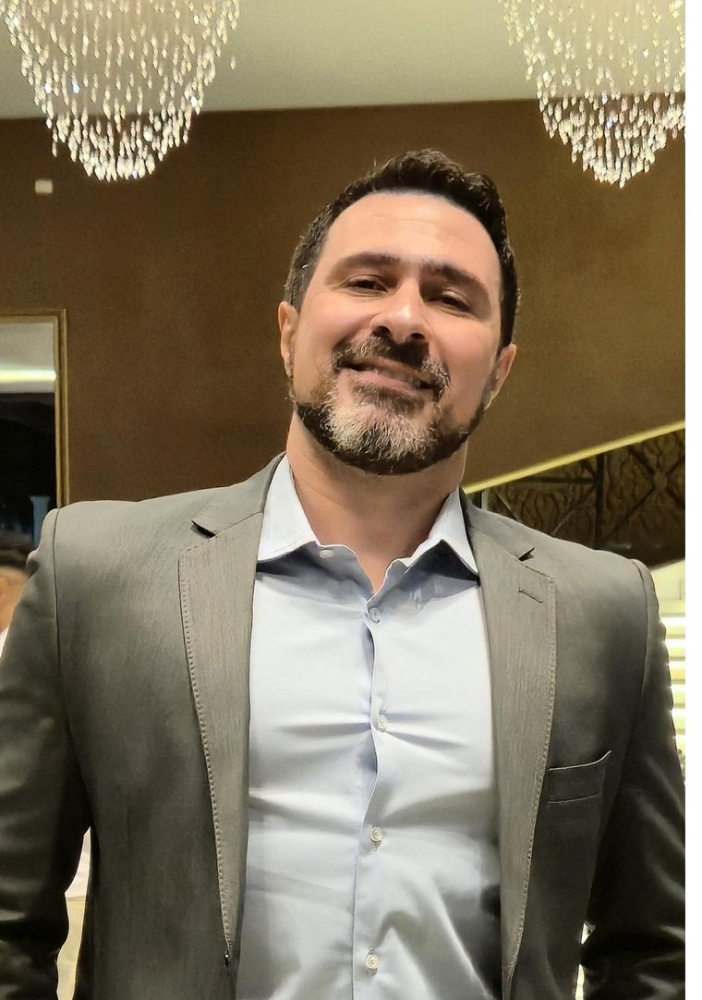

Tirar você do modo automático e colocar sua carreira em movimento real com método, sem abrir mão da sua renda e da sua estabilidade antes da hora.

Comecei como técnico bancário em 2004. Fui Gerente na Rede de Varejo por mais de 15 anos.Vinte e dois anos depois, sou Líder Ágil no movimento de Transformação Digital da CAIXA. Entre um ponto e outro, me desestacionei na prática — no corpo, na mente e na carreira.
Sou economista, 43 anos, de São Paulo. Passei a maior parte da carreira como gerente de carteira PJ, até entender que precisava conhecer outras realidades dentro da empresa. Durante a Pandemia da COVID-19, comecei a refletir sobre mim e sobre quais rumos minha carreira tomaria.
Em vez de largar tudo, fiz a transição com método: empilhei MBAs em Gestão de Projetos e em Tecnologia com ênfase em IA, especializações em Engenharia Econômica e em Docência Superior, e migrei internamente através de um grande projeto de Transformação Digital, sem abrir mão da renda nem da estabilidade. Em paralelo, documentei uma reinvenção física e de hábitos de 2020 a 2026, que também me transformaram por fora.
Hoje pesquiso a interseção entre gestão, tecnologia e inovação, com produção registrada no Lattes, incluindo um artigo sobre fluência digital na era da IA generativa.
Esse percurso virou um método. Desestacionar é tirar o profissional do ponto morto e colocá-lo em movimento de transformação real, com segurança psicológica, clareza e plano. É isso que faço na mentoria.
Os dados de 2025 são claros: a insatisfação é generalizada, mas a maioria trava na mesma barreira — falta de método e de segurança para dar o primeiro passo.
Não é um surto isolado: é o estado do mercado. Repensar a carreira deixou de ser exceção e virou condição normal de quem trabalha.
A maior barreira de quem quer mudar não é talento — é não ter um plano que torne a transição financeiramente sustentável. Depois vêm "não sei para onde ir" (40%) e "falta qualificação" (37%).
Quem segue um processo validado tem o dobro de chance de uma transição bem-sucedida. E 67% relatam mais satisfação depois da mudança. Mas cerca de 70% ainda tentam sozinhos, sem metodologia.
O WEF chama isso de maior reset de habilidades da história. A janela para se reposicionar está aberta — mas não para sempre.
Fontes: WEF Future of Jobs Report 2025 · Gallup State of the Global Workplace · CAGED/MTE · FlexJobs · Deloitte · LinkedIn — compilados no relatório executivo "A Crise Silenciosa do Trabalho".
O problema raramente é falta de vontade. É não ter um caminho seguro para sair do lugar.
Um modelo de gestão de projeto aplicado à sua vida profissional. Cada etapa é insumo da próxima — pensado para proteger sua segurança psicológica, financeira e técnica ao longo de todo o caminho.
As etapas são sequenciais por um motivo: pular o autoconhecimento leva você a escolher o alvo errado; pular o planejamento financeiro força você a aceitar a primeira oferta por necessidade. A velocidade muda de pessoa para pessoa — a ordem, não.
Construído sobre teorias consagradas de carreira: Construção de Carreira e Adaptabilidade (Savickas), Âncoras de Carreira (Schein), Tipologia Vocacional (Holland), Autoeficácia (Bandura) e as tendências da força de trabalho do Fórum Econômico Mundial.
Entender o momento atual: motivações reais, valores inegociáveis e as habilidades que você já carrega e ainda não enxerga como ativo.
Sair da introspecção e validar a hipótese de carreira com dados reais: demanda, faixas salariais, lacunas e conversas com quem já vive a nova área.
Transformar intenção em plano: metas SMART, marcos com prazo e pontos de revisão que impedem a estagnação.
Fechar as lacunas que importam — hard skills, soft skills e experiência prática via projetos — para chegar competitivo na nova área.
Construir a reserva de oportunidade que dá poder de negociar e recusar propostas ruins. É o pilar que tira a pressão das decisões.
Posicionar-se no mercado, executar a busca e adaptar o plano com confiança. O processo não termina na contratação — evolui com você.
Duração típica de uma transição segura e consciente, do ponto de partida à ação. Movimentos laterais costumam levar de 6 a 12 meses; mudanças radicais, de 12 a 24. A distância entre onde você está e onde quer chegar define o ritmo.
Autoridade construída na prática, na academia e no compartilhamento aberto de conhecimento.
Conteúdo semanal sobre carreira, liderança, agilidade e economia. É onde a conversa acontece e onde acompanho de perto quem está em transição.
Seguir o perfil PesquisaProdução acadêmica na interseção entre gestão, tecnologia e inovação — incluindo artigo sobre fluência digital na era da IA generativa.
Ver o currículoUm diagnóstico de 45 minutos: uma conversa estruturada para entender seu momento, identificar o que é inegociável para você e mapear o que trava e o que apoia a sua mudança. Você sai com clareza — independentemente de continuarmos juntos depois.